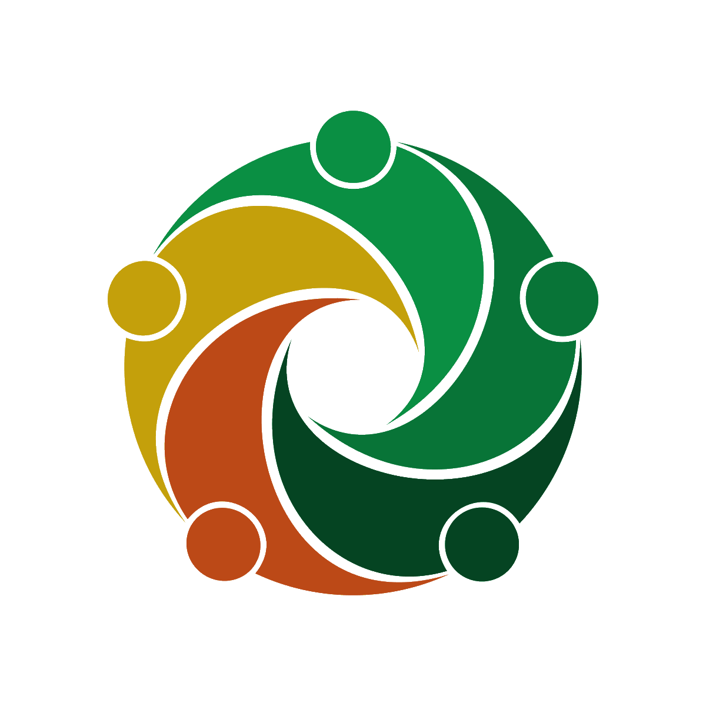

Une agora 2.0

L'agora est un événement fait par les compagnons pour les compagnons (pour savoir qui sont les compagnons, c'est ici). L'agora se déroule pendant un week end du vendredi au dimanche. Cet événement rassemble 2 compagnons de chaque territoire de France, ce qui fait envion 150 jeunes. Chaque année, il y a un thème à explorer. L'an passé c'était sur la vérité et cette fois, nous avons réfléchis autour du thème de la solidarité. Cela devait se dérouler à Jambville, la capitale des sgdf. Mais l'annonce du confinement a changé le programme au dernire moment. L'agora s'est donc déroulée numériquement.
Nous nous sommes tous retrouvés sur la plateforme Discord. Toutes les activités se sont faites en groupe, avant de mettre nos réflexions en commun. Pour pouvoir se retrouver en petits groupes, le serveur était séparé en salons selon les activités.
Tout d'abord, nous avons commencé par définir la solidarité à travers un gros nuage de mots. Ceci fait, nous en avons ressortis des termes clés comme l'entraide, l'échange, le scoutisme et surtout le partage !
Dans l'activité 2, nous avons classé des actions de solidarité en fonction de leur importance. Mais c'était une question piège puisque toute action est importante ! Ce résultat nous a donc menés à un débat sur quelle place prend l'utilité d'une action et qu'est ce qui différencie les grandes et les petites actions de solidarité.
Puis on est passé à une nouvelle activité en groupe actif. On a du passer de salon en salon pour réaliser des défis, ensemble. Puis nous avons relié les défis entre les 2 définitions de solidarité mécanique ou organique. La solidarité mécanique c'est quand on fait l'action de façon solidaire et organique c'est quand le travail est réparti, chacun a donc une tâche différente. Pour terminer la première journée, l'aumonier général nous a fait vivre un petit temps spirituel.
Pour commencer la deuxième journée, nous avons fait un petit décrassage. Cette activité consiste à danser pour bien se réveiller ! Pour cela, l'équipe pilote (celle qui organise l'agora) nous a passé des musiques, nous nous sommes très bien réveillés ! Une fois cela terminé, nous avons parlé du don de soi. Toujours en groupe, nous avons discuté autour d'une publicité thaïlandaise où un homme réalisait des actions solidaires. Par la suite, nous avons réfléchis sur des actions que nous avons ou voulons faire en rapport ou non avec le scoutisme.
Après une petite pause, nous nous sommes penchés sur la question de la solidarité durable dans le temps. Est-ce possible ? Comment la mettre en place ? Nous avons déjà défini les termes puis nous avons réfléchis comment rendre nos projets durables. Nous avons vu l'importance de la relecture, des souvenirs etc. Pourquoi pas s'engager dans le long terme dans nos associations partenaires.
Puis au niveau humain, nous avons réfléchis comment être solidaire avec les autres. Nous avons vu qu'il est important de ne pas imposer ses idées, il faut essayer de comprendre l'autre, se mettre à sa place pour l'aider au mieux.
Nous avons eu une intervention en anglais de Willy, elle nous a parlé des ODD, "Objectifs de développement durable". Puis nous avons travaillé sur un des objectifs du developpment durable et comment le mettre en place localement. En continuité de cette intervention, nous avons parlé de la solidirité international. En goupe, un projet fictif à l'international est né, mais la question est comment le projet peut être agréable pour nous et pour l'association qui nous accueille, comment bien communiquer avec eux et apprécier la culture de notre pays d'accueil.
Après avoir discuté, nous avons fait les présentations des candidatures pour les élections des Représentants Internationnal des jeunes, de l'équipe de rédaction de la parole compagnons (ce qui est un texte résumant les idées ressorti de l'agora. Notre réfelxion, sera apportée à l'Assemblée territoriale 2021). Nous avons également eu les candidatures pour l'agora européenne et pour l'équipe de solidarité international.
Après une bonne nuit de sommeil, le temps est venu de faire une relcture de ce que nous, agoriens et agoriennes, avons vécu. Nous avons aussi rempli une fiche pour pouvoir faire un retour dans nos différents territoires. A la fin de la matinée, nous avons eu les résultats des élections de la veille, puis les résultats des différents concours mis en place pendant le week end comme le concours de goûter ou encore le concours de cabane !
Et voilà, c'est bientôt la fin de l'agora, c'est donc avec un petit pincement au coeur que nous nous sommes tous quittés en espérant que nos chemins se recroisent un jour !